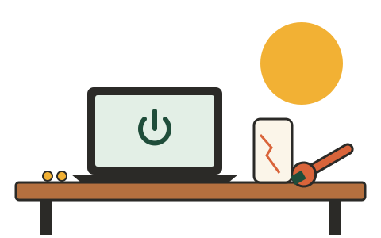

Kapot? Niet weggooien, rebooten!
Laptop traag, telefoonscherm gebarsten of een accu die niks meer doet? Bij Reboot repareren we het samen met jou.
Maak een afspraakHoe werkt het?
STAP 1
Breng je apparaat
Kom langs tijdens de openingstijden of plan online een afspraak. Neem je oplader mee.
STAP 2
Gratis diagnose
Alexander kijkt wat er mis is en vertelt je vooraf wat de reparatie kost.
STAP 3
Weer als nieuw
Je haalt je apparaat gerepareerd op, met drie maanden garantie op de reparatie.
Over Alexander
Alexander Bakker (31) werkte tien jaar als systeembeheerder. Hij ergerde zich eraan hoeveel apparaten er weggegooid worden voor een kapotte accu of een vol geheugen. Daarom opende hij in 2025 Reboot Repaircafé: een werkplaats waar apparaten een tweede leven krijgen.
Openingstijden
- Dinsdag t/m vrijdag: 10:00 - 18:00
- Zaterdag: 10:00 - 16:00 (inloop zonder afspraak)
- Zondag en maandag: gesloten